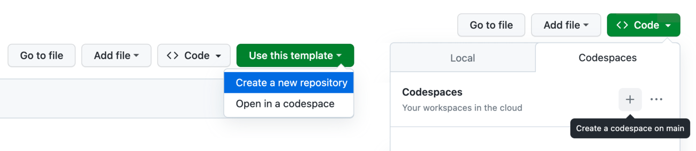

Tools
To save time on setup, during this workshops we're going to use online tools, like Web3Schools editor, and Github Codespaces. The only thing we're going to need is a web browser of your choice.
On RailsGirls website you can find tutorials for setting up your local environment. See: Tools Guide and Rails installation Guide.
Roadmap
There're a lot of tools and languages one must learn to become a professional. During this workshop we'll try some of them, so that you can see how it is to be a web developer, and how learning and using these tools looks like.

How Internet Works
Client–server model

Coach: Explain what server and client are, how communication between them works.
Pure HTML
To see how HTML document looks like, we're going to use web3schools editor. Let's go to Web3Schools Tutorial and click on "Try it Yourself" button.
I encourage you to do the whole tutorial in your free time, but for now we're going to focus on the basics.
Coach: Explain the two main parts of HTML <head> and <body>.
Coach: Explain briefly basic visible HTML tags and their semantic meaning: <main>,
<header> and <footer>, <footer>. Explain the role of
opening and closing tags.
Let's add some main heading to our page. To do that, add <h1>Heading</h1> tag inside
the <body> tag. Then replace Heading with your own text.
Okay, it's time to add more custom content to our page.
Let's add the following code inside the <body> tag:
<main>
<h1>Rails Girls 2023</h1>
<article>
<div>
<h2>For the 10th time, Rails Girls Kraków</h2>
<small>28.04.2023</small>
<p>
Join us for a two-day — FREE — crash course in the exciting world of building web applications with Ruby on Rails.
</p>
</div>
</article>
</main>
Replace example given above with your own text. Once you're ready, add another article below the first one.
Let's make our page pretty.
In our tutorial, we're going to use Tailwind. It's a CSS framework that makes styling web pages much easier.
Coach: Explain the difference between semantic content, and styling. Explain what CSS is, and how frameworks facilitates website styling.
To use Tailwind on our page, we need to add the following code to the <head> tag first:
<script src="https://cdn.tailwindcss.com"> </script>
Now, let's add some classes to make our articles look like cards with rounded borders and shadow. Take a look at an example in Tailwind documentation: https://flowbite.com/docs/components/card/.
Coach: Explain what html class is and why we use it.
Updated code can look like below:
<main class="p-5">
<h1 class="text-2xl mb-3">Rails Girls 2023</h1>
<article class="border border-gray-300 rounded-lg shadow mb-3">
<div class="p-6">
<div class="text-lg">For the 10th time, Rails Girls Kraków</div>
<small class="block mb-3">28.04.2023</small>
<p>
Join us for a two-day — FREE — crash course in the exciting world of building web applications with Ruby on Rails.
</p>
</div>
</article>
<article class="border border-gray-300 rounded-lg shadow mb-3">
<div class="p-6">
<div class="text-lg">WE SEE YOU! And hope for your application.</div>
<small class="block mb-3">28.04.2023</small>
<p>
Mark your calendar for June 23-24, and let's go! SUBMIT your application and spread the word to your family and friends.
</p>
</div>
</article>
</main>
More styling!
We can also add some colors. Let's add bg-gray-100 class to main tag,
and bg-white class to article tags.
See more about Talwind color classes here.
Try to add some colors to articles headings.
To make it look even better, we can also add some images. To do that, we need img
tag, which looks like this: <img src="..." alt="" />. We need to put it inside article
tag, before card main content. So let's do that.
Now we need to replace src="..." with the URL link to our image, and alt="..." with
an alternative text for our image.
Coach: Explain the structure of img tag and help participants with including their own images.
Time to see final result.
After modifications our page should look like this:
<main class="p-5 bg-gray-100">
<h1 class="text-2xl text-teal-700 font-bold mb-3">Rails Girls 2023</h1>
<article class="bg-white border border-gray-300 rounded-lg shadow mb-3">
<img src="https://pbs.twimg.com/media/Fu1HiWzWcAA4ze6?format=jpg&name=medium" class="rounded-t-lg" alt="Rails Girls Krakow banner" />
<div class="p-6">
<div class="text-lg text-teal-700 font-bold">For the 10th time, Rails Girls Kraków</div>
<small class="block mb-3">28.04.2023</small>
<p>
Join us for a two-day — FREE — crash course in the exciting world of building web applications with Ruby on Rails.
</p>
</div>
</article>
<article class="bg-white border border-gray-300 rounded-lg shadow mb-3">
<img src="https://pbs.twimg.com/media/FwfE7ZaWIAArY65?format=jpg&name=medium" class="rounded-t-lg" alt="Rails Girls Krakow banner" />
<div class="p-6">
<div class="text-lg text-teal-700 font-bold">WE SEE YOU! And hope for your application.</div>
<small class="block mb-3">28.04.2023</small>
<p>
Mark your calendar for June 23-24, and let's go! SUBMIT your application and spread the word to your family and friends.
</p>
</div>
</article>
</main>
Static vs. Dynamic Pages
In the example above, if we want to add another article to our blog, we need to manually edit the source code (html). This is called a static page. It's a page that doesn't change unless we change it manually.
For dynamically generated pages, we need a database (a place where we store raw data), and a web engine (eg. Rails), that will generate an html document for us. Let's take a look at the chart below to see how it works.

Coach: Explain how pages with dynamically generated content work.
Ruby Introduction
Now we know how web server with database works, we can try to generate our own dynamic app. But before we do that, I suggest we spend a few minutes on Ruby introduction. Ruby is a programming language, that Rails is written in, so it will be useful to know its basic concepts.
Codespace Setup
In this tutorial we're going to use Github Codespaces, with Ruby 3.1 installed on it. If you're using your local machine, you can skip this step and move to Ruby Tutorial section.
First, you need to create your own Github account.
Coach: Help attendees to create and log in to their Github accounts. Explain briefly what is Github and what how Codespaces feature works.
Please open starting repository, then click on "Use this template" and "Create a new repository" buttons. You can name your repository however you want, repository name will also be a name of your Rails app.
Coach: Explain available options (repository owner, description, public vs. private).

Once you've got your repository created, click on "Code" button, "Codespaces" tab, and select "Create codespace on main" option. It will take a few minutes to install all tools on your Codespace for the first time. Once it's done, you can move to the next step.
Coach: Explain Codespace working area (editor, terminal, files explorer). Explain how to open and close existing Codespace.
Ruby Tutorial
Let's start coding! I suggest creating a "Scripts" directory in files explorer, where you'll store your scripts. Then open Ruby Tutorial in a new card and follow the instructions.
Alternatively, you can use TryRuby tutorial to get yourself familiar with the basic concepts of Ruby language: data types, variables, conditions, methods, classes and objects, loops.
Build Your First Rails App
Time for our first Rails app! Choose one of the tutorials below, and follow the instructions.